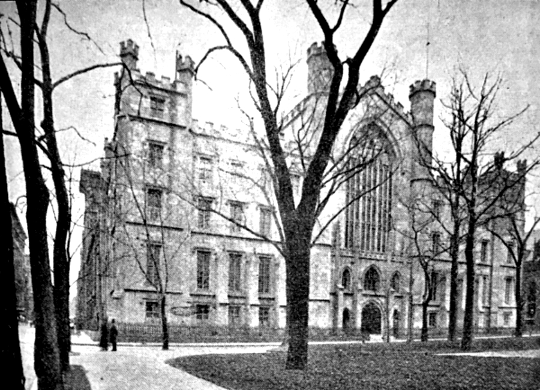

NYU Building Photography Collection
A comprehensive visual history of New York University's Gothic Revival building on Washington Square, from early architectural designs to 19th-century photographs documenting the structure that housed one of America's first photographic laboratories.
NYU Gothic Revival Building: Historical Analysis
The New York University Gothic Revival building, constructed between 1832-1836, served as the university's first permanent home on Washington Square. This remarkable structure not only housed the university's academic facilities but also became the site of some of America's earliest photographic experiments under Professor John William Draper.
Architectural Significance
The building represented a significant departure from the prevailing architectural styles of early 19th-century New York. Its Gothic Revival design, characterized by pointed arches, ribbed vaults, and ornate detailing, reflected the romantic medieval revival that was gaining popularity in American academic architecture during the 1830s.
Photographic Historical Context
The NYU building holds a unique place in photographic history as the location where Professor John William Draper conducted his pioneering daguerreotype experiments in 1839. From the rooftop of this building, Draper captured some of the earliest surviving photographic images in America, including the famous Plate H daguerreotype and his groundbreaking moon photograph of March 26, 1840.
Building Evolution
The collection traces the building's evolution from initial architectural concepts through its various modifications and eventual documentation by early photographers. These images provide invaluable insight into both the development of American higher education and the early history of photography in the United States.
Early Architectural Designs (1832-1836)

Original NYU Design - 1832

Final Design with Measurements - 1836

Building Dimensions
Early Photographs and Views (1836-1847)

NYU Building - 1836

University Commencement - 1837

NYU Building - 1847
Building Perspectives and Context

NYU from Row Houses
.png)
NYU from Left Side Porch

Waverly Street Row Houses - 1846
Later Documentation (1890s)

NYU Building - 1891
